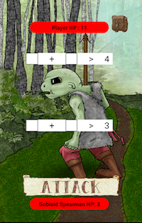

Arithimagicians is a game made as part of the senior project in our Software Engineering and Capstone class. It is an educational game for Android with a target audience of 2nd & 3rd graders. Players must progress through fifteen levels on their way to the Arithimagic University of Learnings, Skills, and Smarts (with Wisdom taught where applicable) [P.S. It's applicable everywhere, The Dean], facing Gobloid and Skeletonian opponents and using a set of magic dice to cast spells. Each opponent displays two mathematical formulas which must be overcome. Arithmetic operations can include addition, subtraction, multiplication, and division.  The dice are placed in blank fields and rolled in unison with the intent to get a value higher than the given answer. Players earn experience points from each battle to spend on more dice, larger dice values, or bonuses to die rolls. Each die has 4, 6, 8, 10, 12, or 20 sides. The game can also be linked to an online account, which progress and review important stats about their game-play. An online account also allows the account owner to purchase power-ups which can aid the player in the game. Power-ups include bonuses to damage,gaining experience points, finding treasure, and regaining hit points.